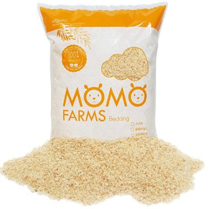

|
오픈형 유리수조 형태가 기본 탈출이 걱정된다면 뚜껑을 따로 제작할 것 (아크릴에 구멍이 뚫린 뚜껑보단 철망을 프레임으로 감싼 형태의 뚜껑을 추천) |
|||
| 골든 햄스터 | 드워프 햄스터(로보로보스키 포함) | ||
| 최소 | 바닥면적 | 6,000㎠ | 5,000㎠ |
| 구체적인 규격 | 100cm X 60cm 혹은 120X50cm 폭은 50cm 이상으로 한다 높이는 최소 60cm이상 |
100 X 50cm 혹은 120 X 50cm 폭은 50cm 이상으로 한다 높이는 최소 50cm 이상 |
|
| 권장 | 바닥면적 | 10,000㎠ 이상 | 8,000㎠ 이상 |
| 구체적인 규격 |
폭 50cm 이상 높이 최소 60cm 이상 |
폭과 높이 모두 50cm 이상 | |
| 소재 | 이름 | 특징 |
|---|---|---|
| 나무 톱밥 |

모모팜 소프트 |
- 아스펜 소재 - sahbing 타입, 입자가 가장 작음 - 포근하고 굴유지력이 좋음 - 전체 베딩용 |

모모팜 슬림와이드 |
- 아스펜 소재 - 짧은 대롱 형태의 톱밥 - 모모팜 슬림 와이드는 입자가 작고 단독 사용으로도 - 어느정도 굴 유지가 가능 |
|

모모팜 슬림 쉐이빙 |
- 아스펜 소재 - 긴 대롱 형태의 톱밥 - 굴 유지력이 떨어짐, 굴 유지를 도와주는 - 다른 베딩과 섞어도 유지력 떨어짐 - 입자가 크기 때문에 체구 작은 - 드워프 햄스터가 쓰기 불편함 |
|